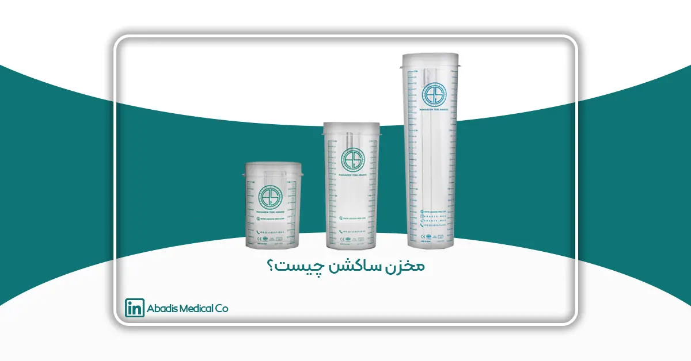
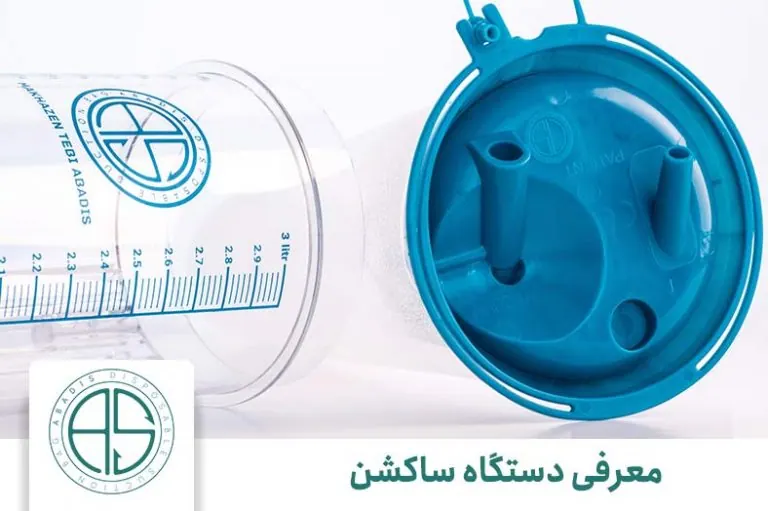
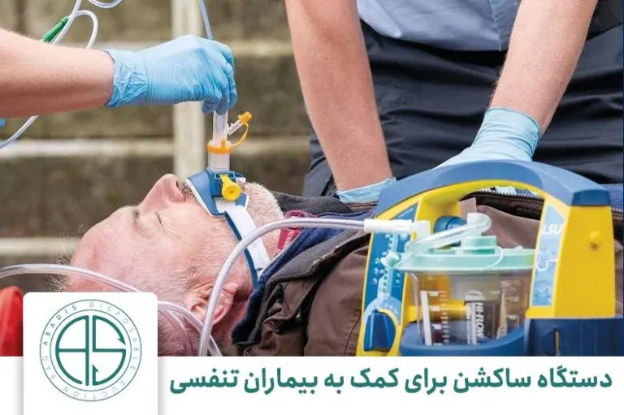
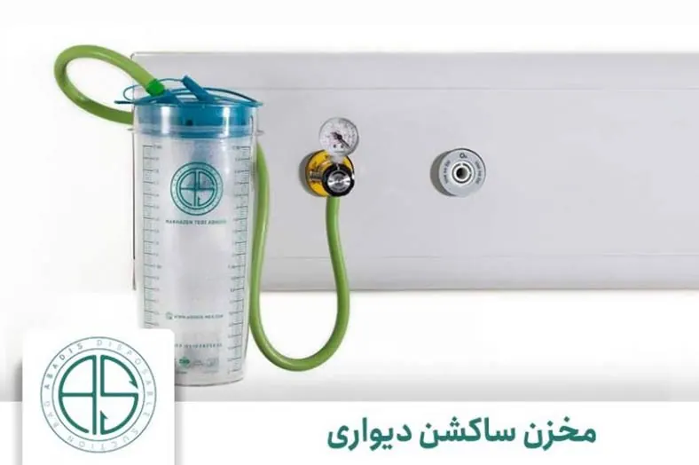

مقدمه
ترکیب علم پزشکی با تکنولوژی، منجر به تولید ابزار های متناسب با نیاز پزشکان و درمان ساده تر بیماران شده است. یکی از دستگاه هایی که تقریبا در تمام مراکز بهداشتی و درمانی دیده میشود؛ انواع دستگاه ساکشن است. اما دستگاه ساکشن را در مقالات دیگر معرفی و بررسی کردیم. این مقاله به یکی از اجزای تشکیل دهنده دستگاه ساکشن یعنی «مخزن ساکشن» اختصاص دارد. قبل از بررسی مخزن ساکشن، نگاهی جزئی به دستگاه ساکشن و انواع آن نیز انداختهایم.

دستگاه ساکشنمعرفی دستگاه ساکشن
دستگاه ساکشن یا وکیوم پمپ، یکی از تجهیزات پرکاربرد پزشکی محسوب میشود که با مکانیزم ایجاد خلاء و فشار منفی، مکش قوی برای مصارف پزشکی ایجاد میکند. این دستگاه به منظور خارج کردن خون و مایعات اضافی از بدن بیمار مورد استفاده قرار میگیرد. این دستگاه کمک دست جراحان در اتاق عمل، به منظور دید بهتر هنگام جراحی استفاده میشود. دیگر کاربرد دستگاه ساکشن، خارج کردن مخاط و ترشحات از دهان و گلوی بیماران است.

دستگاه ساکشن برای کمک به بیماران تنفسی
دیگر کاربرد های دستگاه ساکشن، برای کمک به بیماران تنفسی است که از عفونت ریه ها جلوگیری میکند. چرا که با خارج کردن مایعات زائد از رشد میکروارگانیزم ها جلوگیری میکند. این دستگاه هم با باتری و هم با برق شهری کار میکند. دستگاه ساکشن در انواع ثابت، بیمارستانی، آمبولانسی، بهداشتی و زیبایی، پرتابل؛ هستند. برخی از این دستگاه ها تا 4 مخزن ساکشن بر روی آنها قابل نصب است.
قطعا معرفی کامل دستگاه ساکشن، خارج از حوصله این مقاله است و از توضیح بیشتر برای آن صرف نظر میکنیم. در اینجا صرفا برای آشنایی شما با دستگاه ساکشن و کمک به شناخت بهتر مخازن هر کدام، به صورت اجمالی توضیحاتی را آوردیم. برای اطلاعات بیشتر در رابطه با دستگاه ساکشن، میتوانید مقاله (دستگاه ساکشن چیست) را مطالعه بفرمایید.
مخزن ساکشن چیست؟
همانطور که در بالا هم اشاره کردیم، مخزن ساکشن یکی از چندین جزء دستگاه ساکشن است. مخزن ساکشن به تنهایی کاربردی در دستگاه ساکشن ندارد و در کنار کیسه ساکشن است که معنی پیدا میکند. محفظه ای از جنس پلی کربنات برای قرار گرفتن کیسه ساکشن یکبار مصرف می باشد. به زبان ساده تر این مخزن در دستگاه ساکشن، وظیفه نگهداری از کیسه ساکشن را بر عهدده دارد. کیسه ساکشن از آنجایی که بسیار انعطاف پذیر است و شکل مایع درونش را به خود میگیرد، نیازمند مخزنی برای نگهداری است.
اگر در ذهنتان این سوال ایجاد شده است که «کیسه ساکشن چیست؟» مقاله زیر را مطالعه فرمایید.
مخزن ساکشن با استفاده از ترکیبات بهداشتی پلاستیکی (پلی کربنات شفاف)، تولید میشود که در نهایت به شکل استوانه در میآید. از ویژگی مخازن ساکشن آبادیس، مقاومت در برابر ضربه و شکستگی، قابلیت شستشو و اتوکلاو است.
درست است که مایعات بعد از مکش به داخل مخزن ریخته نمیشوند، اما به دلیل اینکه این مایعات جزو سیال های عفونی و زباله های بیمارستانی محسوب میشوند، بعد از هر بار استفاده از مخزن ساکشن، باید آنرا با روش های مخصوص شستشو داد و ضد عفونی کرد.
انواع مخزن ساکشن
مخزن ساکشن وابسته به نوع دستگاه ساکشن، با یکدیگر متفاوت هستند.
این دستگاه در انواع مختلفی وجود دارد که به صورت زیر دسته بندی شده است.
- مخزن ساکشن پرتابل
- مخزن ساکشن ثابت
- مخزن ساکشن بیمارستانی
- مخزن ساکشن آمبولانسی
- مخزن ساکشن دندان پزشکی
- مخزن ساکشن زیبایی
- مخزن ساکشن دستی
برای هر کدام از این دستگاه ها مخازن با ظرفیت های متفاوتی مورد استفاده قرار میگیرد. انواع مخزن ساکشن، مدرج هستند و میزان ظرفیتشان بر روی آنها مشخص شده است. مخازن ساکشن آبادیس با ظرفیت های یک، دو و سه لیتری تولید میگردند. تفاوت حجم این مخازن به جهت انطباق با انواع مختلف دستگاه ساکشن، همچنین نوع مصرف دستگاه ساکشن است. معمولا مخازن یک لیتری در دستگاه های پرتابل و آمبولانسی، مخازن دو و سه لیتری در دستگاه های بیمارستانی و ثابت مورد استفاده قرار میگیرد.
مخزن ساکشن دیواری
دسته دیگری از دستگاه ساکشن وجود دارد، که به صورت سانترال در بیمارستان ها استفاده میشوند. این نوع از دستگاه ساکشن بسیار بزرگ بوده و معمولا در مراکزی که از این دستگاه استفاده میکنند، خود دستگاه قابل روئیت نیست. تاسیسات دستگاه ساکشن سانترال، در داخل دیوار یا زمین کار گذاشته میشود و تنها خروجی های آن روی دیوار قابل رویت است.

مخزن ساکشن دیواری
مخزن ساکشن دیواری، کمی با دیگر انواع آن متفاوت است. ساکشن دیواری شامل یک عدد رگولاتور فلزی، فیلتر مسدود شونده هنگام عبور مایعات، مخزن ساکشن و اتصالات مورد نیاز برای نصب روی کنسول دیواری است. همچنین نمایشگر عقربه ای برای نمایش میزان فشار نیز روی آن قرار دارد.
ساکشن های دیواری آبادیس نیز، در ظرفیت های یک تا سه لیتری تولید میگردند.
نحوه نصب مخزن ساکشن
نصب مخزن ساکشن در انواع مختلف دستگاه ساکشن متفاوت است، نصب کیسه ساکشن بر روی دستگاه های پرتابل به نوع دستگاه بستگی دارد. عمده دستگاه هایی که در مراکز درمانی استفاده میشود، دستگاه های مدلا و صا ایران می باشد که دارای یک پروفیل در زیر قسمت موتور دستگاه ها می باشد. آبادیس برای نصب مخازن های ساکشن یک نوع گیره پرتابل طراحی کرده است که بر روی پروفیل این نوع دستگاه ها نصب می شود.
نصب کامل محصولات، در سایت به صورت تصویری برای شما قرار داده شده است، ما در اینجا اشاره ای جزئی به آن کردیم، برای اطلاع از نحوه نصب مخازن آبادیس، (اینجا کلیک کنید).